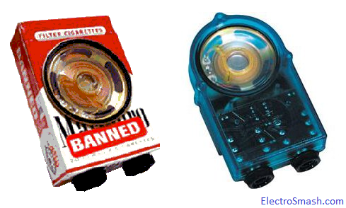

Smokey Amp Analysis
The Smokey Amp is maybe the smallest and most inexpensive guitar mini amplifier, it was made to fit in a cigarette pack and to be powered by a 9V battery.
It was designed by Bruce Zinky, an American Electronic Engineer who headed the Fender amplifier "custom shop". He developed the simple, clever concept of Smokey Amp in the early 80's and improved it for production in the 90's. There are two market models: one in a cigarette pack, and one in a clear molded polycarbonate box.

The Smokey Amp will also drive any 4, 8 or 16ohm speaker cabinet, including 4x12s, and can even be used on the input of another amp as a fuzz box or booster. There are no controls on the amp, just one input, and one output, meaning that everything is controlled by the guitar volume and tone knobs.
Table of contents:
1. Schematic Diagram.
2. Frequency Response.
3. Smokey Amp Modifications.
4. Resources.
1 Smokey Amp Schematic Diagram.
This simple circuit only uses an LM386 Integrated Audio Amplifier IC and two capacitors:
Gain Calculation:
Using the general equation of LM386 amplifier, the voltage gain can be calculated as:
Where Z1-5 and Z1-8 are the impedances between the respective pins. Note that Z1-5 internal resistance is 15K and Z1-8 is 1.35K.
So, the gain is set to the maximum, 200 (46dB). With such a high gain, the circuit could be sensitive to component placement and may tend to oscillate. There are several techniques to improve stability and avoid oscillation: power supply decoupling caps, Zobel output network, etc. Zinky skips all of them in order to keep the design simple.
Pins 1 and 8 are connected together directly instead of using a cap, as the datasheet suggests. With this arrangement, the circuit will archive higher gain, but the DC operating point of the internal transistors will be affected ( which must have some effect over the tone). However, Zinky again drops this suggestion using a straightforward connection between pins and saving another component to be placed.
The 47uF C1 capacitor from pin 7 to ground in LM386, is used to keep the power supply noise from reaching the output. The high-gain input stage of the IC will be isolated from the power supply noise.
2. Smokey Amp Frequency Response
The 47uF C2 output coupling capacitor together with an 8Ω load (speaker) form a high-pass filter that will start rolling off bass under 420Hz in order to keep the small speaker from farting out and also removing any DC component from the output signal.
fc = 1/ (2 x π x R x C) = 1/ (2 x π x 8Ω x 47uF) = 420Hz.
This first order high-pass filter has a classic Butterworth characteristic and 20 dB/decade, or 6 dB/octave, slope under the cut-off frequency.
The cut-off frequency point is 70.7% or -3dB (dB = -20log Vout/Vin) of the voltage gain allowed to pass. The frequency range below this cut-off point fc is called the Stop Band while the frequency range above this point is known as the Pass Band.
This kind of filters have the simplest that can be designed: they are transient perfect, meaning that it passes both amplitude and phase shift unchanged (up to 45 degrees in phase shift) across the passband. The phase angle of the output signal leads that of the input and is equal to +45d at cut-off frequency fc.
On the other hand, the speaker has to work in a pretty large range of frequencies, something that small speakers do not do very well.
A common application of a passive high pass filter, is in audio amplifiers as a coupling capacitor between two amplifier stages and in speaker systems to direct the higher frequency signals to the smaller tweeter type speakers while blocking the lower bass signals or are also used as filters to reduce any low frequency noise or rumble type distortion. When used like this in audio applications the high pass filter is sometimes called a low-cut, or bass cut filter.
3. Smokey Amp Modifications.
The most popular modification in Smokey Amp is to use a bigger output C2 capacitor for extra bass. Using a 220uF cap the fc shifts from 424Hz to 90Hz, increasing the content of low harmonics in the output signal.
fc = 1/ (2 x π x R x C) = 1/ (2 x π x 8Ω x 220uF) = 90Hz.
Find below the difference between the output high pass filter using the default 47uf cap (red color) with a 424.1Hz cut-off frequency and the mod 220uf cap (blue color) with a lower 90.6Hz:
If the Smokey Amp is used to drive a cabinet or a headphones it could be worth, but with the original 2 inches speaker, you can forget about getting any bass response out of it.
There is plenty of room to add more modifications to the original circuit: input buffer to improve the pickup load, gain/vol/tone controls, etc. The beauty of the Smokey Amp remains in its extreme simplicity, so if you are looking for a more complex design, just go for other LM386 based design like Ruby Amp, the Little Gem, or the Noisy Cricket Amp.
4. Resources:
Smokey Amp Review by Shahid Hussain.
Smokey Amp Original Site by Zinky.
Dave Stork Observations on the Smokey Circuit.
RC Filter Tutorial by Wayne Storr.
Maxim IC Analog Filter Design Notes.
H. Matzner and others Passive Filter Design.
Thanks for reading, all feedback is appreciated